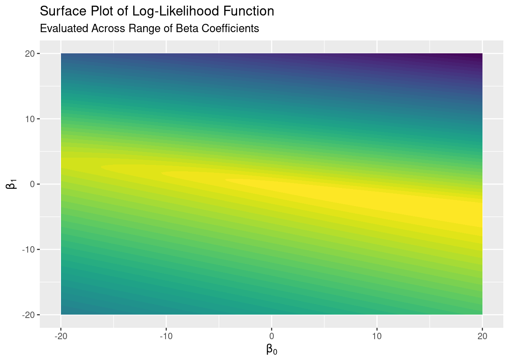
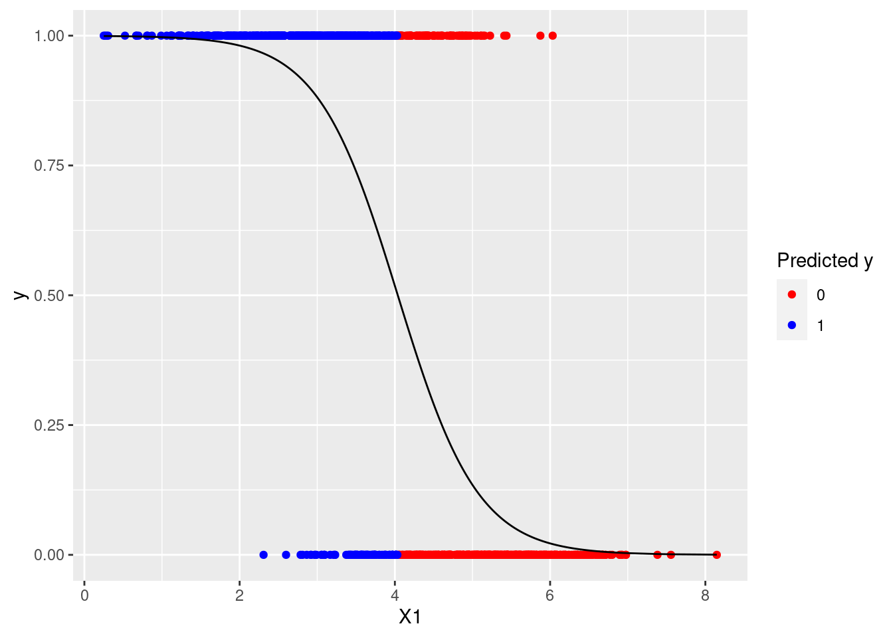

This example walks through fitting a logistic regression model to (idealized) generated data. It assumes some prior knowledge of logistic regression and log-odds (or see Elements of Statistical Learning).
We’ll skip doing a train/test split and comparison in this example and focus solely on implementing logistic regression from scratch.
Though not shown here, this example uses the tidyverse and latex2exp packages.
We’ll generate data with 1,000 observations from a simple case: a binary (0/1) balanced outcome…
y <- append(rep(0, each = 500),
rep(1, each = 500))…and a Gaussian independent variable. To ensure some overlap between the \(y = 0\) and \(y = 1\) observations we’ll draw from two normal distributions with offset means. To include an intercept term we’ll augment our independent variable vectors with a one-vector.
means <- sample.int(6, 2, replace = FALSE)
x <- append(rnorm(500, mean = means[1], sd = 1),
rnorm(500, mean = means[2], sd = 1))
x <- cbind(1, x)
colnames(x) <- c("Int", "X1")Like linear regression, logistic regression is simply an optimization problem. In the logistic case, the function we maximize is the log-likelihood function
This function is strictly concave, so it will have one maximum and our \(\beta\)s (\(\beta_0\) for the intercept and \(\beta_1\) for our single independent variable) will (hopefully!) maximize this function.
In this case we can easily visualize a log-likelihood surface by evaluating the function over some set of values for our two \(\beta\)s. First we’ll create our set of \(\beta\) values and then use those vectors to create a tibble of coordinates for our plot as well as put our \(y\) vector and design matrix together to form a data matrix for easier evaluation.
b0_vec <- seq(-20, 20, .25)
b1_vec <- seq(-20, 20, .25)
surface <- expand_grid(b0_vec, b1_vec)
data_matrix <- cbind(y, x)Since we’re evaluating the log-likelihood function over the data for all combinations of \(\beta\) values in our set, we’ll write two functions. The first handles the interior of the sum of the log-likelihood
log_like_interior <- function(data, b_0, b_1){
b_vec <- c(b_0, b_1)
data[1] %*% t(b_vec) %*% data[2:3] -
log(1 + exp(t(b_vec) %*% data[2:3]))
}and the second handles the summation, applying over the data matrix.
log_like_sum <- function(b_vec){
sum(apply(data_matrix, 1, log_like_interior, b_0 = b_vec[1], b_1 = b_vec[2]))
}Then we can apply the summation function over the \(\beta\)-value coordinated in our surface tibble and add the appropriate log-likelihood to that tibble.
surface$l <- apply(surface, 1, log_like_sum)Now that we have our \(\beta\) coordinates and their corresponding log-likelihoods for our data, we can plot the log-likelihood surface.
likelihood_surface_plot <- ggplot(surface, aes(x = b0_vec, y = b1_vec, z = l)) +
geom_contour_filled(bins = 50) +
labs(title = "Surface Plot of Log-Likelihood Function",
subtitle = "Evaluated Across Range of Beta Coefficients",
x = TeX("$\\beta_0$"),
y = TeX("$\\beta_1$")) +
theme(legend.position = "none")
Our \(\hat{\beta}_0\) and \(\hat{\beta}_1\) coordinates estimated by our logistic regression should be in the bright yellow area, representing our highest-valued bin of log-likelihoods, at the maximum of the log-likelihood surface.
To fit the logistic regression model to the data and find the optimal \(\hat{\beta}\) vector we set the derivative of the log-likelihood function (or score equations with respect to \(\vec{\hat{\beta}}\) to zero:
The method Hastie et al. use in Elements of Statistical Learning is the Newton-Raphson method (which is re-written to be a iteratively re-weighted least squares problem), which iteratively updates \(\vec{\hat{\beta}}\) to find the maximum likelihood. We will use a stopping criteria that checks how the score equations for \(\vec{\hat{\beta}}_0\) and \(\vec{\hat{\beta}}_1\) evaluate and stops iterating when they are within a tolerable distance from zero.
This method uses a diagonal matrix \(W\) which contains the weights derived from \(\Pr (Y = 1 | X = x_i; \vec{\hat{\beta}})\) where \(\vec{\hat{\beta}}\) contains the estimated coefficients from the previous iteration. These weights are then used to solve a weighted least squares problem, which produces a vector \(z\) of “adjusted” responses that are used to update the coefficients.
In each iteration \(i\) we will solve
where
and \(\vec{p}\) are the fitted probabilities given \(\overrightarrow{\widehat{\beta^{i - 1}}}\).
beta_vec_newton <- c(0,0)
max_check <- FALSE
islr_iterations <- 0
while (max_check != TRUE) {
p <- exp(x %*% beta_vec_newton) /
(1 + exp(x %*% beta_vec_newton))
W <- diag(as.vector(p))
z <- x %*% beta_vec_newton + solve(W) %*% (y - p)
beta_vec_newton <- solve(t(x) %*% W %*% x) %*%
t(x) %*% W %*% z
# Check that we are actually maximizing the likelihood function by checking
# if the score functions are evaluating to zero
score <- t(x) %*% (y - p)
score <- c(score[1], score[2])
max_check <- all.equal(c(0,0), score,
tolerance = .Machine$double.eps ^ 0.5)
islr_iterations <- islr_iterations + 1
}Our \(\vec{\hat{\beta}}\) for this example from Newton-Raphson/IRLS is:
## [,1]
## Int 13.092825
## X1 -2.874024Because \(W\) is a \(N \times N\) matrix, the bare-bones IRLS loop above is not exactly the quickest thing to ever run. We can side-step the large \(W\) matrix and matrix operations involving it by instead multiplying the rows of the \(X\) matrix by the predicted probability of \(Y = 1\) for the observation corresponding to that row (given the “old” \(\beta\) from the previous iteration) using the sweep function; see pseudo-code.
beta_vec_mod <- c(0,0)
max_check <- FALSE
mod_iterations <- 0
while (max_check != TRUE) {
p <- exp(x %*% beta_vec_mod) /
(1 + exp(x %*% beta_vec_mod))
# Use `sweep` to multiply each row of x by scalar vector
x_tilde <- sweep(x, MARGIN = 2, p * (1 - p), `*`)
beta_vec_mod <- beta_vec_mod + solve(t(x) %*% x_tilde) %*%
t(x) %*%
(y - p)
# Check that we are actually maximizing the likelihood function by checking
# if the score functions are evaluating to zero
score <- t(x) %*% (y - p)
score <- c(score[1], score[2])
max_check <- all.equal(c(0,0), score,
tolerance = .Machine$double.eps ^ 0.5)
mod_iterations <- mod_iterations + 1
}Generally this will converge much more quickly. The number of iterations for this particular example were
## [1] "ISLR iterations: 1537"## [1] "Modified ISLR iterations: 148"Our \(\vec{\hat{\beta}}\) for this example from the modified algorithm is:
## [,1]
## Int 13.092825
## X1 -2.874024glmWe can easily check the coefficients we’ve calculated against those produced by R’s glm:
glm_model <- glm(y ~ X1, data = as.data.frame(data_matrix), family = "binomial")## [1] "ISLR estimates"## [,1]
## Int 13.092825
## X1 -2.874024## [1] "Modified ISLR estimates"## [,1]
## Int 13.092825
## X1 -2.874024## [1] "GLM estimates"## (Intercept) X1
## 13.092825 -2.874024We can also use the log-likelihood surface plot to (approximately) verify that the coefficients we estimated are correct and that the logistic regression estimates do maximize the log-likelihood function by plotting the point for our estimates on the surface plot:
likelihood_surface_plot <- likelihood_surface_plot +
geom_point(aes(x = beta_vec_mod[1], y = beta_vec_mod[2]))To get the classic logistic regression plot we can calculate
for all \(x_i\) and plot those probabilities as a line against the data points on the \((x, y)\) plane. We’ll also color-code the points by how our model fit classifies the points, using the decision rule that an observation is classified to \(\hat{Y} = 0\) if \(\Pr (Y = 1 | X = x_i; \vec{\beta}) < 0.5\) and \(\hat{Y} = 1\) otherwise.
pred_prob <- exp(data_matrix[, 2:3] %*% beta_vec_mod) /
(1 + exp(data_matrix[, 2:3] %*% beta_vec_mod))
data_tibble <- as_tibble(data_matrix)
data_tibble$pred_prob <- pred_prob[,1]
data_tibble$pred <- if_else(data_tibble$pred_prob < .5, 0, 1)
logistic_plot_preds <- ggplot(data_tibble) +
geom_point(aes(X1, y, color = as.factor(pred))) +
geom_line(aes(X1, pred_prob)) +
scale_color_manual(name = "Predicted y",
values = c("red", "blue"))